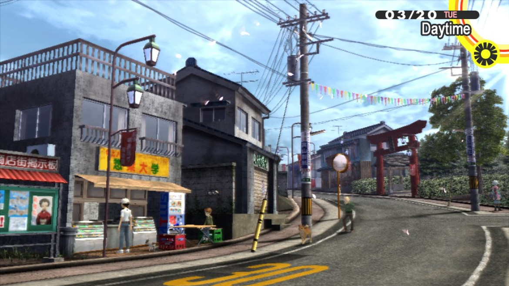

¿Qué es Inaba?
Inaba es un tranquilo pueblo rural situado en la prefectura de Yamanashi, Japón. Lejos de las luces de neón de Tokio, Inaba se caracteriza por su comunidad estrecha, su agricultura y su densa niebla matutina.

La vida en Inaba
La rutina diaria gira en torno al distrito comercial tradicional, la estación de trenes y, más recientemente, la sucursal del supermercado Junes. Los estudiantes asisten a la secundaria Yasogami, el principal establecimiento educativo del lugar.
Datos Clave
- Economía principal
- Comercio minorista y agricultura local.
- Clima
- Mayormente despejado, con periodos de lluvias intensas seguidos por una extraña niebla espesa.
- Seguridad
- A cargo del Detective Ryotaro Dojima y su compañero Adachi.